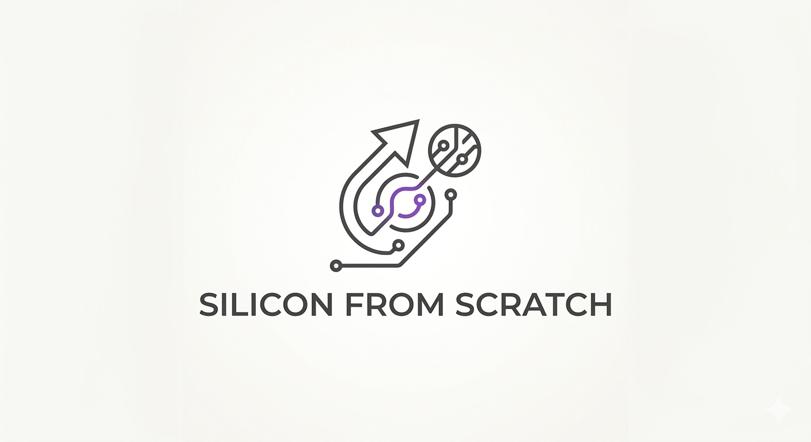

Learn how processors are actually built.
Silicon From Scratch is a learning hub for anyone curious about how the processors inside modern devices are designed and built — and who would rather build one than just read about it.
The idea
Dive in.
The whole approach is built around one idea. You don't need a degree, an expensive software license, or anyone's permission to get started. Start with a single logic block, watch it come alive in a waveform, then climb your way up to a complete CPU.
This is for students, hobbyists, career-switchers, tinkerers, and the merely curious — young or old. If you've ever wondered how a sliver of sand ends up running your code, this is for you.
You don't learn to ride a bike by reading about it; you strap on your helmet and push off, finding your balance as you go, with hope that your leap into the unknown will take you to somewhere you couldn't have reached standing still.
Start here
A path from one logic block to a working CPU.
Each project assumes only what came before it.
-
Beginner — start here
ALU
A parameterized N-bit ALU supporting AND, OR, ADD, SUB, SLT, NOR, and NAND. The single best place to understand how arithmetic and logic are done in hardware.
-
Intermediate
Single-Cycle RV32I CPU
A full RISC-V processor — datapath, control, register file, and memory working together to execute real programs. Verified against a golden model and a hand-derived final-state oracle.
-
Advanced — planned
Pipelined CPU
A 5-stage pipeline with hazard detection and forwarding — the leap from "it works" to "it works fast."
-
Advanced — planned
Physical Design
Schematic capture, layout, transistor-level simulation, synthesis, and timing — taking a design all the way down to silicon.
What you'll find
Every design is built to be opened up.
-
01 / RTL
The design itself
Synthesizable Verilog/SystemVerilog for the datapath, control unit, register file, ALU, and memory.
-
02 / Testbenches
Proof it's correct
Self-checking verification, including lockstep comparison against an independent golden model.
-
03 / Waveforms
See it happen
VCD traces that let you watch behavior cycle by cycle.
-
04 / Programs
What it runs
RISC-V machine-code test programs exercising arithmetic, logic, memory, and control flow.
Tools
You can start for free.
The core projects run on free, open-source tools — no licenses, no
cost: Icarus Verilog for simulation and
GTKWave / EPWave for inspecting waveforms.
The advanced physical-design track uses the professional
Cadence suite — useful to know it exists, but you don't
need it to learn the fundamentals or to get started.
About
About me

Hi, I'm Elliot! I'm glad you found your way here! I founded Silicon From Scratch with the idea that the inside of a computer chip shouldn't be a mystery reserved for people with the right degree, the right software, or the right connections. When I started learning how processors actually work, most of what I found was either dense theory written for people who already understood it, or expensive tools locked behind a paywall. But none of that is what the field actually requires; it's just what stands between most people and getting started.
So I built the thing I wished I'd had when I started: the projects, code, and explanations all in one place, laid out so you can jump in and start tinkering instead of waiting until you feel "ready." The best way in was never to read about it endlessly — it was to build something small, watch it run, and figure out the rest from there.
Whether you're a student, switching fields, or just someone who's always wondered how a sliver of sand ends up running your code, you belong here. Take it apart, break it, rebuild it — that's how this stuff actually clicks. I'm still learning too, so if you build something cool or catch something I got wrong, I'd love to hear about it. Welcome aboard, and dive in.